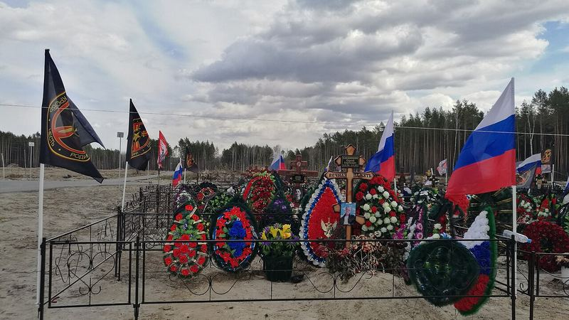
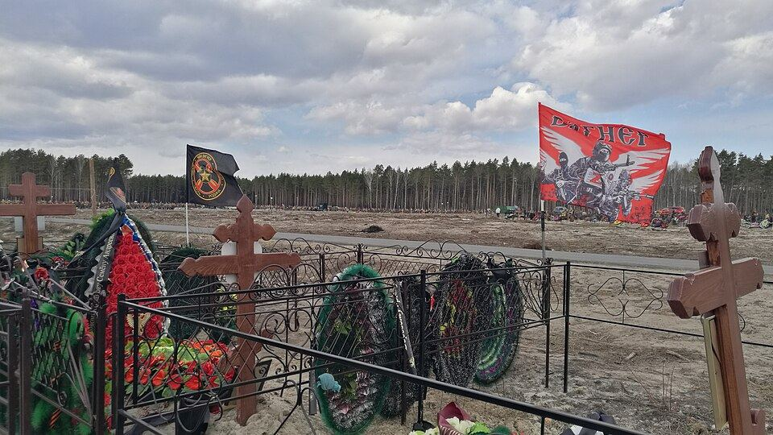
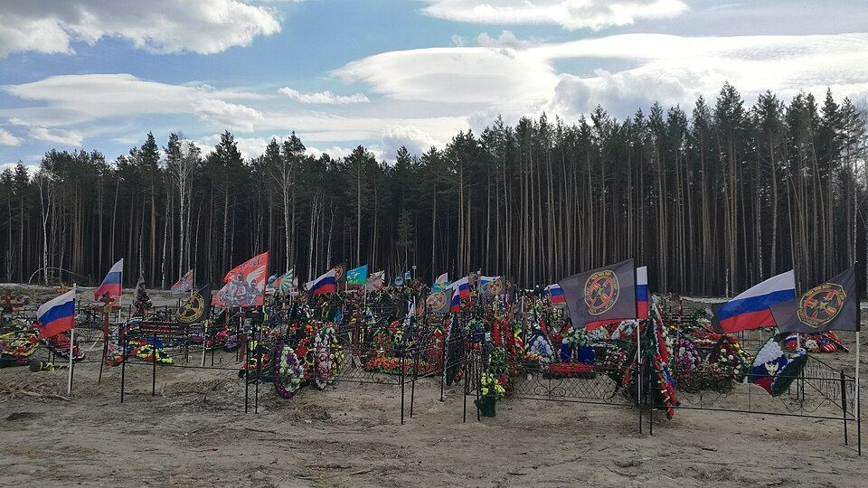
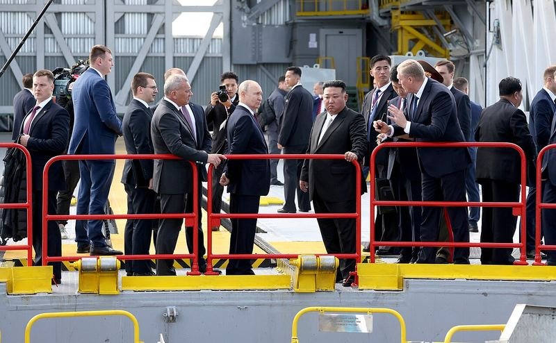
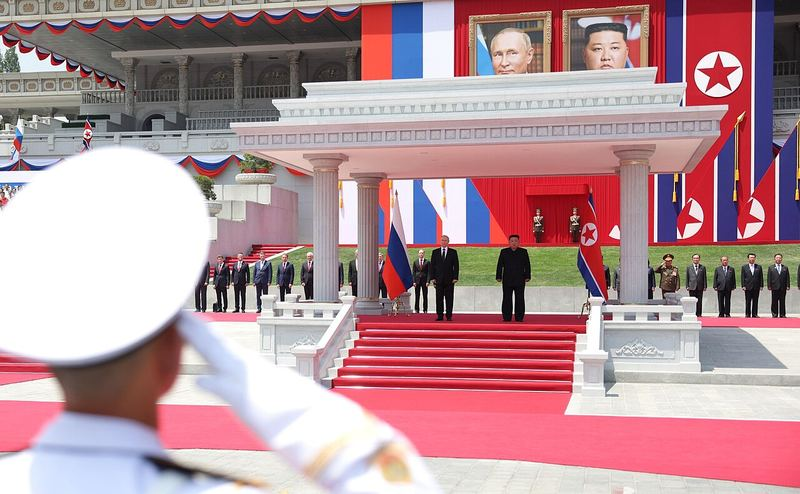
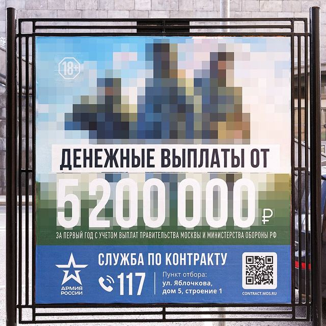
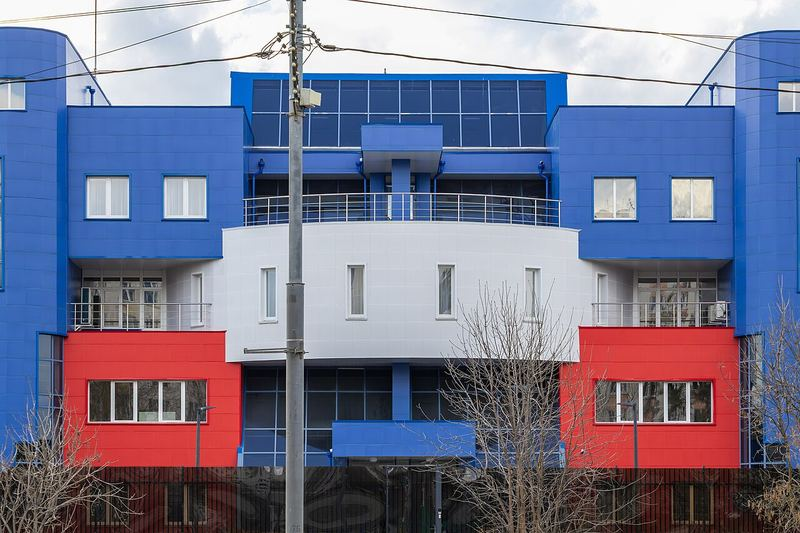
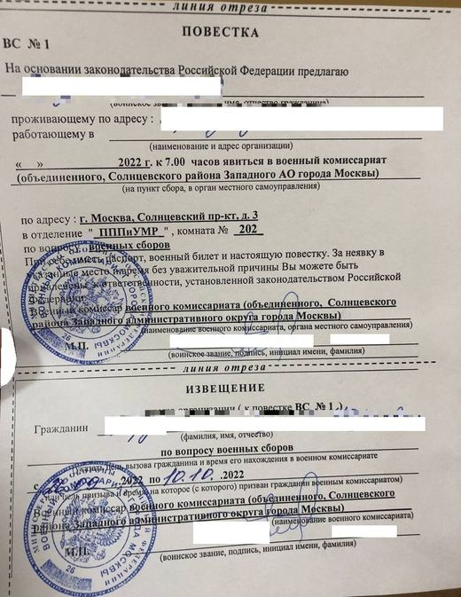
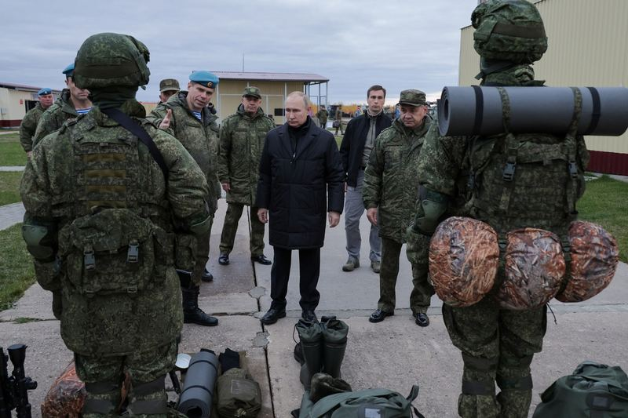

Russia fills its army from several pools: contract soldiers, prisoners, mobilised men and foreigners. Named war dead by home region show who pays.[[mz_list]]
Where the soldiers came from
{{v_flow}}
Recruits per year, by type
{{ridge_label}}
{{ridge_note}}
How to read the yearly chart, with the source of every value
{{ridge_how}}
{{ridge_table}}How to read these charts, and what is left out
Arrow width shows people recruited, not named dead. Contract soldiers and volunteers: official statements for 2023 to the first half of 2026 add up to the high end;[[ria_shoigu24]][[tass_med25]][[interfax_med26]][[ng_bonus]] the low end is an outside estimate.[[wotr]] Mobilised: 300,000 by the Kremlin’s count[[kremlin]] to at least 527,703 by Mediazona’s estimate.[[dw_mz527]] Prisoners: Wagner and Storm Z counts added together,[[ng_wagner]][[istories]] up to Ukraine’s unverified claim.[[ki]] Foreign: North Korean troops[[bbc_nk]] and Central Asian recruits counted by Ukraine.[[occrp_foreign]] Arrows start at a schematic hub and end at a schematic front bracket. The North Korean soldiers died in Russia’s Kursk region, not in Ukraine.[[bbc_nk]]
The three Russian arrows start at one schematic hub because no outlet publishes recruitment counts by region or district for any type. The regional figures that exist cover 11 to 37 regions, appear only in charts, or count one recruiter’s subset, so none is used and nothing is split by region. Hover a region for its named dead instead.
Official figures moved: Shoigu said about 490,000 for 2023 in December 2023 and almost 540,000 in February 2024.[[ria_shoigu24]] Independent estimates from federal budget data are lower: 354,400 for 2023[[isw_istories23]] and 374,200 to 407,200 for 2024.[[istories_407]] Putin said 318,000 were mobilised, volunteers included.[[meduza_318]]
Not drawn, because they have no single place on this map: {{flow_notdrawn}}[[liga_foreign]][[occrp_foreign]] {{flow_skipped}}
Basemap: Natural Earth.[[ne_admin0]]
Zoom the flow map with a two-finger pinch on a phone, or Ctrl and scroll on a computer; drag to move.
Prisoners and Wagner
{{v_pris}}[[mz_wagner]]
The ten colonies with the most recruits
{{v_type_pris}}



How the colony map is made, and what it leaves out
{{col_how}}[[mz_wagner]]
Wagner stopped recruiting in prisons on 7 Feb 2023; after that the Defence Ministry took prisoners into Storm Z units, and no colony-level count exists for that period or for the Storm V units that followed.[[mz_wagner]][[istories]] Wagner and Storm Z are separate counts by different recruiters, so the chart does not join them.[[meduza_wagner]] The only all-in figure, 140,000 to 180,000 convicts by Nov 2024, is an unverified claim by Ukraine's intelligence service.[[ki]] Named dead who were prisoners are counted by each man’s home region, not by the colony, and the named list is not exhaustive.[[mz_regions]]
North Korea and Russia: what flows each way
{{v_nk}}


Timeline
{{nk_timeline}}Every figure, with its detail and source
{{nk_cards}}Line widths on the map are equal because the units differ (people, containers, missiles). Figures in the labels are the sourced ones. The 8 to 11 million shells figure is an estimate; the BBC and Ukraine’s military intelligence say no North Koreans have fought on Ukrainian soil.[[bbc_nk]]
Foreign recruits
{{v_for}}
The named count is a floor, not a total. The Central Asia figures are Ukrainian and OCCRP could not check them independently.[[unn]][[meduza_foreign]][[occrp_foreign]]
How the foreign figures are counted
Foreigners are the contract signers counted by Ukraine’s Coordination Headquarters, as reported by LIGA.net.[[liga_foreign]] {{ts_gaps_for}} Foreign dead come from BBC News Russian with Mediazona, 10 Jul 2026: the BBC pieces differ slightly (3,586 and 3,589); the bars use 3,589 = 2,304 North Korean + 1,285 verified by BBC News Russian.[[bbc_foreign]]
Contract soldiers and money




The only all-years figure, about 1.3 million, has no stated method.[[kluge]][[wotr]]
An agency's target list includes "residents of economically depressed regions".[[insider]]
Signing bonuses against local wages
{{v_bonus}}
How the bonus is counted
A contract soldier gets a federal payment of 400,000 roubles, reported by Janis Kluge and shown on VoenSchet's regional cards,[[kluge]] plus a regional payment that each region sets, read from VoenSchet's summary of regional acts.[[vs]] Each bar adds the two and divides by the region's 2025 average monthly wage,[[wage]] so it shows months of local pay. Municipal top-ups and special bonuses for drone troops or reserve units are left out. Kaliningrad, Nizhny Novgorod and Kirov come from a January 2026 aggregator table and may be out of date;[[gogov]] Penza's 1,000,000 regional roubles come from a news report.[[penza_bonus]] Where no amount could be confirmed, the region is left out (listed under Method).
{{capb}}
Who pays the price: where the named dead came from
Map options
Show
Named dead per 100,000
National rate {{nat_rate}} named dead per 100,000 residents; Tuva {{tuva_rate}}, Chukotka {{chu_rate}}; Moscow city {{mow_rate}}, Chechnya {{che_rate}}.
{{v_rank}} Hover or tap a region for its rank among the 85.
How the map is made
Names are counted by home region from Mediazona's regional pages,[[mz_regions]] and divided by the Rosstat estimate of residents on 1 Jan 2024.[[pop]] Borders are Natural Earth, simplified.[[ne]] Crimea and Sevastopol are drawn as Russian-administered and are not recognised as Russian by Ukraine or most states. Scroll or pinch to zoom, drag to move, tap a region for its details. Regions with no figure are dark blue. Every layer counts men by home region, where they lived, not where a prison, unit or cemetery stands: Mediazona uses the residence in an obituary, then the registration address, then the birthplace, and the burial place only as a last resort.[[mz_geo]] The Prisoners layer is named dead recruited from prison.
{{v_remote}}
{{v_pov}}
{{v_eth}}
{{v_wage}}
How the layers were tested
{{cap1}}
{{pov_how}}[[pov]] {{ols_pov}}
The poverty rate is income-based and Rosstat changed its method in 2021 and revised earlier years in 2024, so it is a rough guide to deprivation. The Nenets and Khanty-Mansi areas have no published rate, so theirs is the published headcount divided by population ({{pov_derived}}).[[povn]]
{{cap2}} Wages are the 2025 average for organisations, from Rosstat,[[wage]] not adjusted for local prices.
{{cap3}}
Shares are from the 2020 census as compiled by real-stats.ru,[[census]] which lists only the largest peoples of each region and has no Russian row for Dagestan. Dagestan is filled from Rosstat's national-composition table: 102,243 Russians among 3,182,054 residents, {{r_dag_ru}}%,[[census_dag]] so all 85 regions are in the test. {{ols}}
Distance is measured in a straight line from the middle of Moscow city to the middle of each region's largest land area. Pearson's r measures a straight-line link and runs from −1 to 1, where 0 is no link. Spearman's rho does the same for rankings and is less sensitive to a few extreme regions. These describe the data and do not show cause.
{{v_type}}
Named dead by how they joined, cumulative totals
Counted by each man’s home region. The named list is not exhaustive.[[mz_list]] One bar per recruit type, linear from zero, sorted largest first, not stacked by year. Russian types are counted by home region (85 regions, Mediazona regional pages, 23 Oct 2026);[[mz_regions]] foreign dead come from BBC News Russian with Mediazona, 10 Jul 2026.[[bbc_foreign]] Hover a bar for its source.
Latest from trackers
Strategic updates from eight tracker accounts on X, each read at its article on 28 Oct 2026; outlets are credited and numbered. Script refresh: {{trackers_generated}}.
{{trackers_html}}Method and limits
- Rates are named dead divided by the Rosstat population estimate of 1 Jan 2024. Both the list and the population move over time, and the list lags recent months. The 23 Oct 2026 total of {{named_total}} is the sum of Mediazona's regional pages; a Meduza article of 10 Jul 2026 quoted a main-list figure of 233,033 and the two were not reconciled.[[meduza_foreign]]
- The map covers 85 regions. Names from Donetsk, Luhansk, Baikonur, foreigners and unknown origin have no regional population or wage and are left out of every rate.
- Poverty rates are Rosstat 2025 figures for 83 regions and derived for two. Wages are 2025 nominal averages and bonuses are October 2026 rates, so months of wages are slightly overstated where pay has risen since.
- Bonus status: "firm" means the regional card says the amount was confirmed. Other bars are outlined because the programme ends on 31 Oct 2026, the card data is more than 30 days old, the amount is from an older table, or it comes from media reports. Sakha's card gives a range of 1.5 to 3 million rubles regionally and the upper end is charted. Karachay-Cherkessia is shown at the standard 2.1 million rubles, and the card gives 3.1 million for reservists.[[vs]]
- Regions left out of the bonus chart: {{excluded_list}}.
- Descriptions only. Nothing on this page is a forecast.
Data Sources (click to open)
-
{{sources_html}}